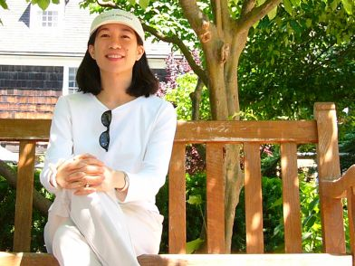
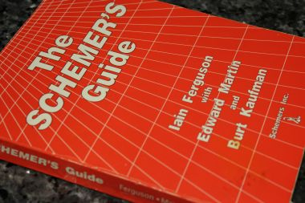

home / programming / scheme
High School Computing: The Inside Story
Source: https://www.eimacs.com/blog/2011/12/learn-computer-programming-without-complicated-syntax/

IMACS alumna, Natasha Chen, on her way to visit the Institute for Advanced Study in Princeton, NJ.
Originally published in the May 1992 issue of The Computing Teacher, this essay by IMACS alumna Natasha Chen brought much needed attention within computer science education circles to the debate over teaching computer programming for beginners. Amazingly, almost 20 years later, the key issue raised by the article – how to teach fundamental computing concepts in a way that is effective, engaging and empowering – remain unresolved. Many students still find themselves in syntax-driven classes that focus on a short-term ability to “make apps now!” in the language du jour rather than being taught strong fundamentals that enable success throughout college and career, regardless of which programming language is used. At a time when the US faces a huge gap between technical job positions and qualified individuals to fill them and the UK is grappling with a need for true computer science in its national curriculum, IMACS revisits this issue with a renewed urgency.
A Bad Beginning In BASIC
My first experience in computer programming classes was an elective course in BASIC back in sixth grade. I chose that class because I thought that computers were powerful and capable of doing many interesting things. Electives usually have a reputation for being fun, but my classmates and I heard stories about the difficulty of this course and how only one or two kids ever got A’s. I thought to myself, “Maybe they just weren’t interested in computers. But I am, so how bad could it really be?”
Pretty bad! Forget learning anything that encouraged us to think, wonder and explore. We were asked to study the history of computers, memorize the names of hardware, and master the rules of syntax. We were sixth graders. We weren’t about to enter the high-tech world of programming. All we wanted was to see what neat things we could do with the computer. The class wasn’t difficult at all; memorization is hardly a challenge if you take the time to do it. There were so few A’s because no one cared to do busy work, and that’s all that was offered.
Swamped By Syntax
After my sixth grade BASIC experience, I never wanted to take another computer science course again. Of course, when you are eleven years old, G.P.A. and class rank don’t mean much to you. But by the time I was about to enter my junior year in high school, I started thinking about those things … and college … and the classes I needed to take. To avoid another BASIC nightmare, I decided to bypass Computer Programming I (BASIC) and go straight into Computer Programming II (Pascal). Pascal was different enough from BASIC to make me think that it had to be better. I found out that the improvement was far less than I had hoped. We jumped right into the syntax of Pascal: program (input, output), begin-end, etc. Even after two years of studying Pascal, I still can’t remember all the rules.
It’s like trying to interest small children in reading. You try to show how much there is to discover in books by reading with or to them. Maybe they will pick up some books on their own and then some more, and pretty soon they will have built up a library. But if you dump the library on top of them, ask them to memorize the Dewey Decimal System and then put the books back in order, by the time they finish – assuming they do – they won’t care to look at another book, much less read one.
One of the students from that CP2 class had a very hard time with the syntax of writing information-processing programs, but when it came to the one graphics program we were assigned he was an absolute genius. I can’t begin to describe all the amazing things he could make the cursor do. But he was never recommended for the AP Computer Science class. By having no place for such a student, the computer education system may very well be tossing aside some of the best computing minds, simply because they don’t fit the mold of the curriculum whose rigidity derives from that of the languages used.
AP Computer Science: As Good As It Gets?
Five of us made it to the AP CS class and four more came from the CP3 (Fortran) class. We spent the first two days refreshing our memories of the syntactic rules that had evaporated over the summer. It seemed as if the purpose of CP2 was to teach us the rules and now, we had to remember them so that we could play the game – someone else’s game.
The last year was one of frustration. The most commonly heard outburst in our classroom was undoubtedly, “Stupid computer!” No matter what, it was always the computer’s fault. It seemed that my classmates’ programming strategy was to let the computer find their errors in the hope that this would somehow help them solve the problem. It never occurred to them that the computer is simply a testing ground for a well-thought-out idea. A human could conceivably go through an algorithm manually; it would just take an intolerably long time. For most of my classmates, this was their fourth year in the computer science education system, and all it had taught them was to rely too much on the computer and not enough on themselves.
The root of this problem lies in what is currently thought to be important for students to learn in computer programming courses, namely, syntax. Whoever is designing the high school computer science curriculum seems to think that, once students learn the rules of the language they are studying, having them write programs that demonstrate how those rules are applied will teach them what is important in computer science. As a student who has been through the system, who has had to waste the majority of my patience, concentration, and effort on keeping the syntax of my programs straight, leaving barely enough of these qualities to devote to solving the problem, I can tell you that such a belief could not be more wrong. This method of teaching is brainwashing. It is not like brainwashing or similar to brainwashing; it is brainwashing. It is a danger to computer science, sending out trained hackers instead of enthusiastic visionaries. Fortunately for me, I was given the opportunity to recover.

The author's original copy of "The Schemer's Guide."
Saved By Scheme
In ninth grade, my math class began an introductory computer programming course in Logo. My classmates and I looked forward to every other Friday when we studied Logo, not only because it meant a break from math, but also because working in Logo was a lot of fun, and it was easy. Unfortunately, that course was ‘squeezed out’ as far as my class was concerned by the pressure of our math courses over the next three years. During that time, however, the course had been rewritten using the programming language Scheme.
As a senior, I had a study hall period that I sometimes spent in my math classroom doing homework. It was on one of these days that I happened to overhear my math teachers talking about Scheme. I was already tearing my hair out in my Pascal class trying to learn something for the upcoming AP Computer Science exam – in fact, all I was learning was the page number of the reference section in our textbook, which I frequently consulted to see whether type declarations or variable declarations came first or to re-check how to declare a record for a linked list. Enticed by what I heard, I willingly gave up my study hall to come in four days of every week to learn Scheme on my own for no credit at all, using The Schemer’s Guide. My reward was that I regained the enthusiasm and interest I thought I had lost six years earlier.
In the four months it took me to complete my course in Scheme, I learned more about computer programming than I had in my two years of Pascal. In less than five minutes after I began reading the text, almost everything I learned more than three years previously in our aborted Logo course came back to me. Five minutes, not the two days it took to recover from just one summer away from Pascal. There were hardly any rules of syntax to remember. Furthermore, throughout the entire four months, I never touched a computer. The ease of learning and using Scheme gave me such confidence in the programs I wrote that I didn’t feel the need for the security of a compiler to check my work.
Simple Language Makes Learning Complex Concepts Easier
The thing I liked most about taking this course in Scheme was that I knew that I was learning something. Every concept I had ever tried and failed to understand comprehensively in my Pascal class – searching and sorting procedures, recursion, processing binary trees – was made clear when I studied them in Scheme. These things occur so naturally in Scheme that I couldn’t help but understand. After mastering the concept, I could then go back into my Pascal class and easily master the code. The point here is that concepts like these are universal in computer science. After you understand them, then you can learn the rules of any language in order to encode them. But it doesn’t matter how well you have mastered the syntax of a language if you don’t understand the meaning of what you are typing or the reason why it works.
Recursion serves as a prime example. My understanding was very vague; I knew that something was done over and over again. But after seeing the first recursive program in the Scheme text, I understood what it was all about. When we took the test on recursion in AP CS, my whole class seemed to choke, with grades in the 60s and 70s, and the second highest score in the 80s. Thanks to my background in Scheme, I aced the test. I couldn’t quite believe it myself! For the first time, I fully realized that Scheme was not only easy to learn; it was also easy to learn from.
It is a myth to think that length and complexity make a program impressive – a prevalent idea among my AP classmates. Scheme code is clear and easy to understand. There is no need for pseudo-code. Thoughts go straight from your head to clear, simple code. The strange thing is that Pascal sets you up to fall into the trap of complexity and to disobey the laws of top-down design. As a procedural language, it enticed us into trying to do too much in one procedure simply because it could be done. With Scheme, I couldn’t write a function that had more than one purpose. It is as inherently top-down as it is inherently recursive.
Computer Programming Is Fun Again!
In my four months of studying Scheme, I not only covered and understood everything that had been presented in the AP Computer Science course, but went beyond that to study functional programming, data and functional abstraction, objected-oriented programming, and artificial intelligence. I still can’t believe all the amazing things I have learned in this short time. This is how I wanted to learn when I was in that BASIC class in sixth grade. I had to wait six years to do it, but it was well worth it.
I wrote this article because I don’t want another kid to have to go through the frustration that I did and not get anything out of it. I don’t want another kid’s enthusiasm snuffed out by a pile of library books. I want students who study computer science to be inspired to create their own game. Kids never liked rules anyway, and that’s all we are--kids.